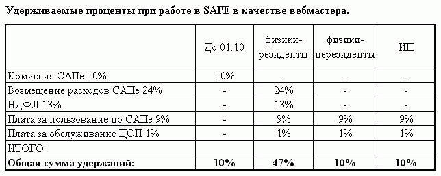
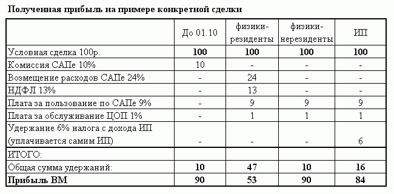

Все взиморасчеты внутри системы были переведены в рубли по курсу Центробанка на 11.10.2008 г. Минимальная цена за ссылку ограничена 25 коп.(0.01 у.е.). Взаиморасчеты между пользователями теперь осуществляются через уполномоченных Агентов - ЦОПы (центры по обслуживанию партнеров). Пополнение баланса и выплаты заработанных средств тоже осуществляются через ЦОПы. Пользователям предложено заключить агентские договора в виде оферты с двумя ЦОПами, один из которых представляет интересы пользователя в сделках покупки размещения информационных материалов (ссылок), а второй - в сделках продажи. Комиссия системы не меняется и составляет 10%.
Вроде бы сначала и ничего страшного, но пользователям предстояло определиться с выбором своего статуса, т.к. от статуса напрямую зависело количество налогов, комиссии и прочих сборов, взимаемых теперь биржой через Цопы. А форм статусов предложено три:
Соответственно, и суммы, снимаемые с заработков очень разнились:

Т.е. как видим из таблиц, в худшем положении оказались физические лица, незарегистрированные ИП. Для нерезидентов ничего не поменялось, т.е. заявив себя иностранцем, все полноту ответственности за плату налогов и сборов Вы принимаете на себя и Sape ответственности за Вас не несет.
А вот конкретный пример с цифрами:

Цифры говорят сами за себя. Понятно, что на форуме Сапы началось что-то просто невообразимое, пока наконец-то не пришло понимание того, что надо либо платить налоги в большом количестве, либо платить налоги в маленьком размере, либо не платить вообще и не спать спокойно :)
И что-же в итоге? В итоге часть вебмастеров и оптимизаторов просто ушла на другие биржи (хотя скорее всего и на других биржах в ближайшее время произойдут изменения по выводы из тени доходов вебмастеров). Крупные игроки уже имели статус ИП или ООО, ОАО или поспешили зарегистрировать юр.лицо или ИП. Конечно, большая часть плюнула на всё и поспешила объявить себя нерезидентами из Грузии, Лабрадора или Китая :)
Биржа продолжает плодотворно работать, есть конечно проблемы с доступностью аккаунтов (часто уходит в даун), доходы судя по опросу на форуме сильно не падают.
Удивляет поспешность, с которой произошла перестройка на бирже. Можно было заранее предупредить пользователей о грядущих измениях и нововведениях и спокойно, без суеты произвести переход до Нового 2009 года. И пользователи бы не стояли, извиняюсь, раком и шума с вонью не наблюдали бы на форуме.
Также нагнала шума и война Сапы со скандально известной биржей Линкфид.
Понятно, что урвать кусок такого сладкого пирога, как комиссия от покупки, продажи прямых ссылок, контекстных ссылок и статей пожелали многие (читаем тут обзор новых бирж, пока находящихся в аутсайдерах)
Но Линкфид не захотел быть аутсайдером и сейчас уже наступает Сапе на пятки. Сапа не захотела делить свой кусок пирога с Линкфид и начала банить своих пользователей, который продают ссылки и там, и там, используя при этом клиентский код Сапы.
В духе этого довольно странно выглядит полное равнодушие администрации Сапы к использованию клиентского кода новой биржи ссылок "Uni Place", также как Линкфид забравшей довольно много клиентов у Sape. Есть даже мнение, что "Uni Place" - это новый проект от владельцев Sape.
|
Знаете ли вы, что: Тема аренды интернет магазина сегодня одна из самых актуальных. Можно с минимальными усилиями получить готовую площадку для организации продаж своих товаров. Помимо этого, владельцы площадки предложат раскрутку, SEO-оптимизацию, и прочие сопуствующие услуги. |